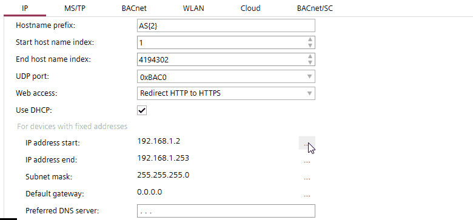

IP addressing
The following properties must be unique in the project for all devices:
- Device name
- Device instance number
- IP address
- MS/TP address (combination of MAC address and network number)
- Serial number (must be unique or empty)
Checking for duplicate device properties
The default IP settings for the whole project are defined in Settings > Address defaults.
Address defaults
You can override the default IP settings in the details of a building, building element or device. The following table is an overview of IP settings, and where you can override them.
Setting | Building > Building structure > Building element details | Building > Building structure > Details pane of the device version ≤ 1.5 |
|---|---|---|
Hostname |
| x |
UDP Port | x | x |
Allow HTTP connection |
| x |
IP address start | x |
|
IP address end | x |
|
IP Address |
| x |
Use DHCP | x | x |
Subnet mask | x | x |
Default gateway | x | x |
When defining IP settings in ABT Site consider the following:
- IP range
You can set an IP address start and an IP address end in Settings > Address defaults. You can narrow down the default address range in the details of a building or building element. Narrowing down the address range is not limited by the defined project settings, only the initial values are derived from the project settings.
The network address ranges of a building or building element override the network address ranges defined in Settings> Address defaults. - IP address and DHCP
In Settings > Address defaults > IP, the Use DHCP setting can be used to let the computer manage IP addresses and provide them to the devices automatically. You can override the DHCP setting in the details of a building, building element or device. You can also override all generic settings in the details of a device by entering an individual IP address in the Address field. - Subnet mask
You can set the subnet mask in Settings > Address defaults. You can override the subnet mask in the details of a building, building element or device. - UDP Port and HTTP connection
You can set the UDP port and allow HTTP connections in Settings > Address defaults. You can override the UDP port setting in the details of a building element and in the details of a device.
You can only override the Allow HTTP connection setting in the details of a device. - Hostname
You can set a default hostname prefix for the whole project in Settings > Address defaults. You can override the set value in the details of a device by entering an individual hostname in the Hostname field.
The IP address dialog supports and checks for correct entry of the IP addresses.


If you copy a device from one building element to another, the system does not check if the given network address is within the default range.
Invalid IP addresses
The following IP addresses are invalid:
- 0.x.x.x:
invalid - 127.x.x.x
Loopback address range - x.x.x.0
Indicating the network, not a host - x.x.x.255
Broadcast address for a selected network - 224.x.x.x and higher
224 - 239: reserved for multicast
240 - 254: reserved
255: invalid
The IP address 0.0.0.0 is valid to indicate an undefined IP gateway.
You can check for invalid IP addresses in Building > Device list.
Device list